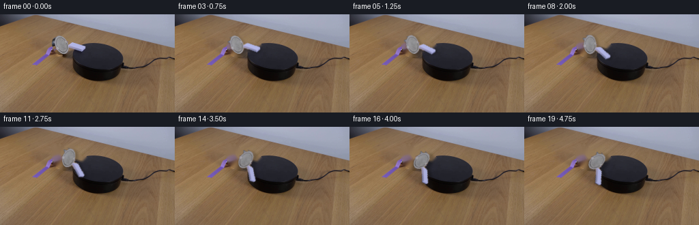
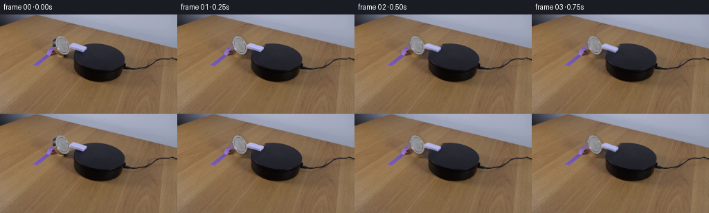
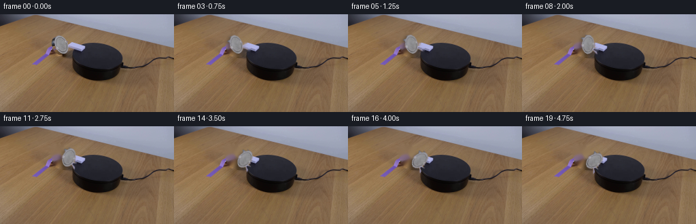
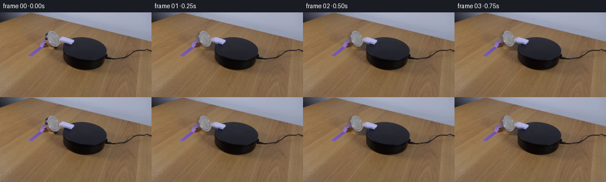

CODING AGENTS AS PIXEL WORLD MODELS
traex/DeepSeek-V4.1-Flash · 0096
点击播放 · 原生 RGB 像素
逐轮保存的候选
回放视频、检查图与代码变化。
每份候选均可单独播放。实际图片检查记录在下方工具轨迹中。
候选 01播放与检查图
点击播放 · 原生 RGB 像素

展开代码变化
--- 上一保存版本
+++ 本次保存版本
@@ -0,0 +1,218 @@
+from pathlib import Path
+
+import cv2
+import numpy as np
+from PIL import Image
+
+import artifact_io
+
+
+CASE_DIR = Path(__file__).resolve().parent
+W, H = 256, 144
+N_FRAMES = 20
+FPS = 4
+
+
+def _largest_component(mask, seed=None):
+ mask_u8 = mask.astype(np.uint8)
+ count, labels, stats, _ = cv2.connectedComponentsWithStats(mask_u8, 8)
+ if count <= 1:
+ return np.zeros_like(mask, dtype=bool)
+ if seed is not None:
+ index = labels[seed[1], seed[0]]
+ if index != 0:
+ return labels == index
+ index = 1 + int(np.argmax(stats[1:, cv2.CC_STAT_AREA]))
+ return labels == index
+
+
+def extract_domino(source):
+ image = source.astype(np.float32)
+ yy, xx = np.mgrid[:H, :W]
+ region = (xx >= 72) & (xx <= 130) & (yy >= 27) & (yy <= 62)
+
+ mean = image.mean(axis=2)
+ chroma = image.max(axis=2) - image.min(axis=2)
+ blue = image[:, :, 2] - image[:, :, 0]
+ blue_green = image[:, :, 2] - image[:, :, 1]
+
+ pale = (mean > 100.0) & (chroma < 35.0) & region
+ blue_side = (blue > 25.0) & (blue_green > 10.0) & region
+
+ pale = _largest_component(pale, seed=(89, 44))
+ blue_side = _largest_component(blue_side, seed=(112, 47))
+ object_mask = (pale | blue_side).astype(np.uint8)
+ object_mask = cv2.morphologyEx(
+ object_mask, cv2.MORPH_CLOSE, np.ones((3, 3), np.uint8), iterations=1
+ )
+
+ contours, _ = cv2.findContours(
+ object_mask, cv2.RETR_EXTERNAL, cv2.CHAIN_APPROX_SIMPLE
+ )
+ filled = np.zeros_like(object_mask)
+ if contours:
+ cv2.drawContours(filled, contours, -1, 1, -1)
+ object_mask = filled
+
+ ys, xs = np.where(pale)
+ bottom_y = int(ys.max())
+ bottom_xs = xs[ys == bottom_y]
+ pivot = (
+ float(bottom_xs.min() + bottom_xs.max()) * 0.5 + 0.5,
+ float(bottom_y) + 0.5,
+ )
+
+ ys, xs = np.where(object_mask > 0)
+ x0 = max(0, int(xs.min()) - 2)
+ x1 = min(W, int(xs.max()) + 3)
+ y0 = max(0, int(ys.min()) - 2)
+ y1 = min(H, int(ys.max()) + 3)
+
+ alpha = cv2.GaussianBlur(
+ object_mask.astype(np.float32), (3, 3), sigmaX=0.45, sigmaY=0.45
+ )
+ alpha = np.clip(alpha, 0.0, 1.0)
+
+ sprite = np.zeros((H, W, 3), dtype=np.float32)
+ sprite_alpha = np.zeros((H, W), dtype=np.float32)
+ sprite[y0:y1, x0:x1] = image[y0:y1, x0:x1]
+ sprite_alpha[y0:y1, x0:x1] = alpha[y0:y1, x0:x1]
+
+ remove = cv2.dilate(
+ object_mask, np.ones((5, 5), np.uint8), iterations=1
+ )
+ # Remove the original contact shadow as well; a new one is drawn for each pose.
+ shadow_removal = np.zeros_like(remove)
+ shadow_removal[2:, 1:] = remove[:-2, :-1]
+ remove = cv2.dilate(
+ np.maximum(remove, shadow_removal), np.ones((3, 3), np.uint8), iterations=1
+ )
+ background = cv2.inpaint(
+ source, (remove * 255).astype(np.uint8), 4, cv2.INPAINT_TELEA
+ )
+
+ return sprite, sprite_alpha, background, pivot
+
+
+def _rotation_matrix(pivot, angle_degrees):
+ return cv2.getRotationMatrix2D(
+ (float(pivot[0]), float(pivot[1])), -float(angle_degrees), 1.0
+ )
+
+
+def _warp_float(layer, matrix):
+ return cv2.warpAffine(
+ layer,
+ matrix,
+ (W, H),
+ flags=cv2.INTER_LINEAR,
+ borderMode=cv2.BORDER_CONSTANT,
+ borderValue=0,
+ )
+
+
+def _shift(layer, dx, dy):
+ result = np.zeros_like(layer)
+ src_x0 = max(0, -dx)
+ src_x1 = min(W, W - dx)
+ src_y0 = max(0, -dy)
+ src_y1 = min(H, H - dy)
+ if src_x0 < src_x1 and src_y0 < src_y1:
+ result[src_y0 + dy : src_y1 + dy, src_x0 + dx : src_x1 + dx] = layer[
+ src_y0:src_y1, src_x0:src_x1
+ ]
+ return result
+
+
+def _angle_for_progress(progress):
+ start = 0.06
+ span = 1.0 - start
+ u = float(np.clip((progress - start) / span, 0.0, 1.0))
+ eased = u * u * (3.0 - 2.0 * u)
+ return 76.0 * eased
+
+
+def render_pose(sprite, sprite_alpha, background, pivot, angle_degrees):
+ matrix = _rotation_matrix(pivot, angle_degrees)
+ rotated_sprite = _warp_float(sprite, matrix)
+ rotated_alpha = np.clip(_warp_float(sprite_alpha, matrix), 0.0, 1.0)
+
+ radians = np.deg2rad(angle_degrees)
+ light = 1.0 - 0.045 * np.sin(radians) + 0.018 * np.cos(radians)
+ rotated_sprite = np.clip(rotated_sprite * light, 0.0, 255.0)
+
+ shadow_mask = _warp_float(sprite_alpha, matrix)
+ shadow_dx = int(round(2.0 + 0.055 * angle_degrees))
+ shadow_dy = int(round(1.0 + 0.018 * angle_degrees))
+ shadow_mask = _shift(shadow_mask, shadow_dx, shadow_dy)
+ shadow_mask = cv2.GaussianBlur(shadow_mask, (0, 0), sigmaX=2.0, sigmaY=2.0)
+ shadow_mask = np.clip(shadow_mask * 0.75, 0.0, 1.0)
+
+ base = background.astype(np.float32)
+ base = base * (1.0 - 0.31 * shadow_mask[:, :, None])
+ base = np.clip(base, 0.0, 255.0)
+
+ alpha3 = rotated_alpha[:, :, None]
+ composed = base * (1.0 - alpha3) + rotated_sprite * alpha3
+ return composed
+
+
+def generate_frames():
+ source = np.asarray(Image.open(CASE_DIR / "first_frame.png").convert("RGB"))
+ sprite, sprite_alpha, background, pivot = extract_domino(source)
+
+ frames = np.empty((N_FRAMES, H, W, 3), dtype=np.uint8)
+ frames[0] = source
+
+ for index in range(1, N_FRAMES):
+ progress = index / float(N_FRAMES - 1)
+ angle = _angle_for_progress(progress)
+ if angle < 0.15:
+ rendered = render_pose(
+ sprite, sprite_alpha, background, pivot, angle
+ )
+ else:
+ shutter = 1.5 + 0.45 * np.sin(np.pi * progress)
+ samples = (angle - shutter, angle, angle + shutter)
+ weights = (0.20, 0.60, 0.20)
+ rendered = np.zeros((H, W, 3), dtype=np.float32)
+ for sample_angle, weight in zip(samples, weights):
+ rendered += weight * render_pose(
+ sprite, sprite_alpha, background, pivot, sample_angle
+ )
+ frames[index] = np.clip(rendered, 0.0, 255.0).astype(np.uint8)
+
+ assert np.array_equal(frames[0], source)
+ return frames
+
+
+def _write_video(frames):
+ writer = cv2.VideoWriter(
+ str(CASE_DIR / "video.mp4"),
+ cv2.VideoWriter_fourcc(*"mp4v"),
+ FPS,
+ (W, H),
+ )
+ if not writer.isOpened():
+ return False
+ for frame in frames:
+ writer.write(cv2.cvtColor(frame, cv2.COLOR_RGB2BGR))
+ writer.release()
+ return True
+
+
+def main():
+ frames = generate_frames()
+ artifact_io.save(frames, CASE_DIR)
+ _write_video(frames)
+ print(
+ "generated",
+ frames.shape,
+ frames.dtype,
+ "frame0_identical=",
+ bool(np.array_equal(frames[0], np.asarray(Image.open(CASE_DIR / "first_frame.png").convert("RGB")))),
+ )
+
+
+if __name__ == "__main__":
+ main()
候选 02播放与检查图
点击播放 · 原生 RGB 像素


展开代码变化
--- 上一保存版本
+++ 本次保存版本
@@ -125,9 +125,7 @@
def _angle_for_progress(progress):
- start = 0.06
- span = 1.0 - start
- u = float(np.clip((progress - start) / span, 0.0, 1.0))
+ u = float(np.clip(progress, 0.0, 1.0))
eased = u * u * (3.0 - 2.0 * u)
return 76.0 * eased
@@ -138,12 +136,12 @@
rotated_alpha = np.clip(_warp_float(sprite_alpha, matrix), 0.0, 1.0)
radians = np.deg2rad(angle_degrees)
- light = 1.0 - 0.045 * np.sin(radians) + 0.018 * np.cos(radians)
+ light = 1.0 - 0.012 * np.sin(radians) + 0.004 * np.cos(radians)
rotated_sprite = np.clip(rotated_sprite * light, 0.0, 255.0)
shadow_mask = _warp_float(sprite_alpha, matrix)
- shadow_dx = int(round(2.0 + 0.055 * angle_degrees))
- shadow_dy = int(round(1.0 + 0.018 * angle_degrees))
+ shadow_dx = int(round(-3.0 - 0.015 * angle_degrees))
+ shadow_dy = int(round(1.0 + 0.030 * angle_degrees))
shadow_mask = _shift(shadow_mask, shadow_dx, shadow_dy)
shadow_mask = cv2.GaussianBlur(shadow_mask, (0, 0), sigmaX=2.0, sigmaY=2.0)
shadow_mask = np.clip(shadow_mask * 0.75, 0.0, 1.0)
候选 03播放与检查图
候选 04播放与检查图
点击播放 · 原生 RGB 像素


展开代码变化
--- 上一保存版本
+++ 本次保存版本
@@ -33,15 +33,10 @@
mean = image.mean(axis=2)
chroma = image.max(axis=2) - image.min(axis=2)
- blue = image[:, :, 2] - image[:, :, 0]
- blue_green = image[:, :, 2] - image[:, :, 1]
-
pale = (mean > 100.0) & (chroma < 35.0) & region
- blue_side = (blue > 25.0) & (blue_green > 10.0) & region
pale = _largest_component(pale, seed=(89, 44))
- blue_side = _largest_component(blue_side, seed=(112, 47))
- object_mask = (pale | blue_side).astype(np.uint8)
+ object_mask = pale.astype(np.uint8)
object_mask = cv2.morphologyEx(
object_mask, cv2.MORPH_CLOSE, np.ones((3, 3), np.uint8), iterations=1
)
可观测工具轨迹
实际执行的命令与返回图片。
命令 1exit 0
/bin/bash -c "pwd && rg --files -g '"'!*.pyc'"' | sed -n '1,120p'"
命令 2exit 0
/bin/bash -c "printf '%s\\n' '--- prompt.txt ---'; sed -n '1,240p' prompt.txt; printf '%s\\n' '--- GENERATION_RULES.md ---'; sed -n '1,280p' GENERATION_RULES.md"
命令 3exit 0
/bin/bash -c "file first_frame.png; identify first_frame.png 2>/dev/null || true; find . -maxdepth 2 -type f -printf '%p %s bytes\\n' | sort | sed -n '1,160p'"
命令 4exit 0
/bin/bash -c "sed -n '1,260p' artifact_io.py"
命令 5exit 0
/bin/bash -c "sed -n '1,260p' player_template.html"
命令 6exit 0
/bin/bash -c "python3 - <<'PY'
from PIL import Image
import numpy as np
im=Image.open('first_frame.png').convert('RGB')
a=np.asarray(im)
print('size',im.size,'shape',a.shape,'dtype',a.dtype)
print('min/max/mean',a.min(),a.max(),a.mean(axis=(0,1)))
print('unique colors',len(np.unique(a.reshape(-1,3),axis=0)))
# quantized color counts
q=(a//16)*16
u,c=np.unique(q.reshape(-1,3),axis=0,return_counts=True)
for i in np.argsort(c)[-25:][::-1]: print(tuple(u[i]), int(c[i]))
PY"命令 7exit 0
/bin/bash -c "python3 - <<'PY'
from PIL import Image
import numpy as np
a=np.array(Image.open('first_frame.png').convert('RGB')).astype(float)
# blocks 4x4, avg; print luminance ascii 64x36
g=a.mean(2)
for y in range(0,144,4):
s=''
for x in range(0,256,4):
v=g[y:y+4,x:x+4].mean()
chars=' .:-=+*#%@'
s+=chars[min(9,int(v/256*10))]
print(f'{y:3d} '+s)
PY"命令 8exit 0
/bin/bash -c "python3 - <<'PY'
from PIL import Image
import numpy as np
from colorsys import rgb_to_hsv
a=np.array(Image.open('first_frame.png').convert('RGB'))
# summary by 16x16 tiles: mean RGB, min,max,std, unique; maybe select
for y in range(0,144,16):
row=[]
for x in range(0,256,16):
t=a[y:y+16,x:x+16].reshape(-1,3)
m=t.mean(0).astype(int); s=t.std(0).mean().astype(int)
row.append(f'{x:3d},{y:3d}:{m[0]:02x}{m[1]:02x}{m[2]:02x}/{s:02d}')
print(' | '.join(row))
PY"命令 9exit 0
/bin/bash -c "python3 - <<'PY'
from PIL import Image
import numpy as np
a=np.array(Image.open('first_frame.png').convert('RGB')).astype(float)
# gradient magnitude and channel-specific
for mode in ['lum','sat','edge']:
g=a.mean(2)
if mode=='edge':
gy=np.abs(np.diff(g,axis=0,prepend=g[:1]));gx=np.abs(np.diff(g,axis=1,prepend=g[:,:1]));v=np.maximum(gx,gy)
elif mode=='sat':
v=a.max(2)-a.min(2)
else:v=g
print('\\n',mode)
for y in range(0,144,2):
s=''
for x in range(0,256,2):
z=v[y:y+2,x:x+2].mean()
chars=' .:-=+*#%@'
if mode=='edge': s+=chars[min(9,int(z/45*9))]
elif mode=='sat':s+=chars[min(9,int(z/130*9))]
else:s+=chars[min(9,int(z/256*10))]
print(f'{y:3d} '+s)
PY"命令 10exit 0
/bin/bash -c "python3 - <<'PY'
from PIL import Image
import numpy as np
a=np.array(Image.open('first_frame.png').convert('RGB'))
g=a.mean(2)
chars=' .:-=+*#%@'
def crop(x0,y0,x1,y1,step=1,scale=1):
print(f'CROP x{x0}:{x1} y{y0}:{y1}')
for y in range(y0,y1,step):
s=''
for x in range(x0,x1,step):
z=g[y:y+step,x:x+step].mean();s+=chars[min(9,int(z/256*10))]
print(f'{y:3d} '+s)
crop(75,35,155,105,1)
PY"命令 11exit 0
/bin/bash -c "python3 - <<'PY'
from PIL import Image
import numpy as np
a=np.array(Image.open('first_frame.png').convert('RGB')).astype(float)
# print crop RGB averages 1 pixel as hex for structured spots and colors near object
for name,x0,y0,x1,y1 in [('domino',86,36,121,60),('platform',108,55,161,100),('magnet',40,42,95,80),('bg',190,20,220,40),('table',10,110,40,140)]:
print('\\n',name)
for y in range(y0,y1,2):
vals=[]
for x in range(x0,x1,4):
t=a[y:y+2,x:x+4].mean((0,1)).astype(int)
vals.append('%02x%02x%02x'%tuple(t))
print(f'{y:3d}',' '.join(vals))
PY"命令 12exit 0
/bin/bash -c "python3 - <<'PY'
from PIL import Image
import numpy as np
a=np.array(Image.open('first_frame.png').convert('RGB')).astype(np.int16)
# manually inspect lines and detect color discontinuities around domino region
for y in range(30,70):
vals=[]
for x in range(75,135):
r,g,b=a[y,x]
# white/grey/bluish pixels
if (r>110 and g>110 and b>110) or (b>r+15 and b>g+5):
vals.append(x)
if vals:
# groups
gs=[]; st=pr=vals[0]
for x in vals[1:]:
if x>pr+1: gs.append((st,pr));st=x
pr=x
gs.append((st,pr))
print(y,gs)
PY"命令 13exit 0
/bin/bash -c "python3 - <<'PY'
from PIL import Image
import numpy as np
a=np.array(Image.open('first_frame.png').convert('RGB')).astype(np.int16)
# coarse segmentation thresholds print mask crop 70:140, 25:75 using classes
for y in range(25,75):
s=''
for x in range(65,145):
r,g,b=a[y,x]
if b>r+10 and b>g+5: c='B' # blue
elif r>125 and g>125 and b>125: c='W'
elif r>105 and g>105 and b>105: c='w'
elif r<35 and g<35 and b<45: c='K'
elif r<80 and g<75 and b<85: c='d'
elif r>125 and g>95 and b<100: c='T'
else:c='.'
s+=c
print(f'{y:3d} '+s)
PY"命令 14exit 0
/bin/bash -c "python3 - <<'PY'
from PIL import Image
import numpy as np
a=np.array(Image.open('first_frame.png').convert('RGB')).astype(np.int16)
# RGB/Lab-ish classify exact types. print edge crop with rgb symbols, maybe nearest palette
pal={'T':(145,111,75),'w':(155,157,175),'W':(175,180,220),'B':(115,118,200),'K':(20,20,25),'d':(80,75,80)}
for y in range(28,65):
s=''
for x in range(70,135):
r,g,b=map(int,a[y,x])
if b-r>40 and b-g>30: c='B'
elif b-r>20 and b-g>12:c='b'
elif r>155 and g>155 and b>175:c='W'
elif r>125 and g>125 and b>125:c='w'
elif r<40 and g<40 and b<50:c='K'
elif r<80 and g<75 and b<85:c='d'
else:c='.'
s+=c
print(f'{y:3d} '+s)
PY"命令 15exit 0
/bin/bash -c "python3 - <<'PY'
from PIL import Image
import numpy as np
a=np.array(Image.open('first_frame.png').convert('RGB')).astype(np.int16)
# estimate masks and geometry using selected color regions
Y,X=np.mgrid[:144,:256]
# domino white body mask: high all channels, low blue chroma, within region
r,g,b=a[...,0],a[...,1],a[...,2]
# body all gray/white region. polygon via connected components thresholds using scipy
from scipy.ndimage import label
mask=(r>118)&(g>118)&(b>118)&(np.abs(b-r)<30)&(Y>=28)&(Y<=60)&(X>=70)&(X<=130)
lab,n=label(mask)
counts=np.bincount(lab.ravel()); print('components',[(i,counts[i]) for i in np.argsort(counts)[::-1][:10]])
# points
for i in np.argsort(counts)[::-1][1:5]:
ys,xs=np.where(lab==i); print(i, len(xs), (xs.min(),ys.min(),xs.max(),ys.max()),'mean',a[ys,xs].mean(0))
# platform dark mask region, rows
for y in range(40,101,4):
xs=np.where((a[y,:,0]<50)&(a[y,:,1]<50)&(a[y,:,2]<55))[0]
if len(xs): print('dark',y,xs.min(),xs.max(),len(xs))
PY"命令 16exit 0
/bin/bash -c "python3 - <<'PY'
from PIL import Image
import numpy as np
a=np.array(Image.open('first_frame.png').convert('RGB')).astype(np.int16)
# polygon sampling: output colors around possible corners
for y in [32,34,36,38,40,42,44,46,48,50,52,54,56,58]:
print('\\ny',y)
for x in range(75,126,2):
r,g,b=a[y,x]
# assign representative symbols
if r>125 and g>125 and b>125: c='W'
elif r>95 and g>95 and b>95: c='w'
elif b-r>35 and b-g>20:c='B'
elif b-r>15 and b-g>10:c='b'
elif r<35 and g<35 and b<45:c='K'
elif r<80 and g<80 and b<90:c='d'
else:c='.'
print(c,end='')
print()
PY"命令 17exit 0
/bin/bash -c 'which ffmpeg || true; which convert || true; which magick || true; which python3; du -sh .'
命令 18exit 0
/bin/bash -c "python3 - <<'PY' mods=['numpy','scipy','PIL','cv2','skimage','matplotlib','imageio','ffmpeg'] for m in mods: try: x=__import__(m); print(m,'OK',getattr(x,'__version__','')) except Exception as e: print(m,'NO',e) PY"
命令 19exit 0
/bin/bash -c "python3 - <<'PY'
from PIL import Image
import numpy as np
a=np.array(Image.open('first_frame.png').convert('RGB')).astype(np.int16)
for y in range(24,69):
s=''
for x in range(60,146):
r,g,b=map(int,a[y,x]); mn=min(r,g,b); mx=max(r,g,b); chrom=mx-mn
if r<45 and g<45 and b<52:c='K'
elif mn>170:c='@'
elif mn>145:c='W'
elif mn>120 and chrom<38:c='w'
elif mn>100 and chrom<42:c='g'
elif b-r>45 and b-g>30:c='B'
elif b-r>20 and b-g>12:c='b'
elif r-g>18 and g-b>10:c='T'
elif r<100 and g<100 and b<110:c='d'
else:c='.'
s+=c
print(f'{y:3d} '+s)
PY"命令 20exit 0
/bin/bash -c "python3 - <<'PY'
from PIL import Image
import numpy as np
from scipy.ndimage import label, binary_fill_holes, binary_closing
from scipy.spatial import ConvexHull
a=np.array(Image.open('first_frame.png').convert('RGB')).astype(float)
r,g,b=a[...,0],a[...,1],a[...,2]
Y,X=np.mgrid[:144,:256]
# rough white body based on low chroma, brightness
mx=a.max(2); mn=a.min(2); chrom=mx-mn
mask=(mx>115)&(chrom<32)&(Y>=28)&(Y<=60)&(X>=70)&(X<=112)
mask=binary_closing(mask,iterations=1)
lab,n=label(mask)
counts=np.bincount(lab.ravel()); idx=np.argmax(counts[1:])+1
ys,xs=np.where(lab==idx)
print('component',len(xs),'bbox',xs.min(),ys.min(),xs.max(),ys.max())
print('mean',a[ys,xs].mean(0),'median',np.median(a[ys,xs],axis=0))
# rows intervals
for y in range(ys.min(),ys.max()+1):
xx=np.where(lab[y]==idx)[0]
if len(xx):
# groups
gs=[];st=pr=xx[0]
for x in xx[1:]:
if x>pr+1:gs.append((st,pr));st=x
pr=x
gs.append((st,pr))
print(y,gs)
# hull points
from scipy.spatial import ConvexHull
pts=np.c_[xs,ys]; hull=ConvexHull(pts); print('hull',pts[hull.vertices])
PY"命令 21exit 0
/bin/bash -c "python3 - <<'PY'
from PIL import Image
import numpy as np
a=np.array(Image.open('first_frame.png').convert('RGB')).astype(float)
# inspect saturation in domino hull; distinguish white vs strong blue
for y in range(30,60):
vals=[]
for x in range(74,104):
r,g,b=a[y,x]
# nearest white/blue based on b-r
vals.append('B' if b-r>35 and b-g>20 else 'b' if b-r>15 else 'W' if min(r,g,b)>150 else 'w' if min(r,g,b)>120 else '.' )
print(y,''.join(vals))
# top colors within broad domino region
reg=a[30:60,74:105].reshape(-1,3).astype(int)
q=(reg//8)*8; u,c=np.unique(q,axis=0,return_counts=True)
print('top')
for i in np.argsort(c)[-20:][::-1]: print(tuple(u[i]),int(c[i]))
PY"命令 22exit 0
/bin/bash -c "python3 - <<'PY'
from PIL import Image
import numpy as np
a=np.array(Image.open('first_frame.png').convert('RGB')).astype(float)
# save upscaled nearest crops to .tmp for own potential pixel access only; print selected RGB grid with exact values via custom color clustering
for y in range(32,59):
print('y',y)
for x in range(74,104,3):
rgb=a[y:y+1,x:x+3].mean((0,1)).astype(int)
print('%02x%02x%02x'%tuple(rgb),end=' ')
print()
PY"命令 23exit 0
/bin/bash -c "python3 - <<'PY'
from PIL import Image
import numpy as np
a=np.array(Image.open('first_frame.png').convert('RGB')).astype(np.int16)
# Detailed region classify with boundaries via nearest Kmeans? print color bins in domino crop by 2x2
for y in range(30,61,2):
print(f'{y:3d}',end=' ')
for x in range(72,108,2):
t=a[y:y+2,x:x+2].mean((0,1));r,g,b=t
if b-r>45 and b-g>25:c='B'
elif b-r>20 and b-g>12:c='b'
elif r>160 and g>160 and b>160:c='@'
elif min(t)>140 and max(t)-min(t)<20:c='W'
elif min(t)>120 and max(t)-min(t)<28:c='w'
elif min(t)>100 and max(t)-min(t)<32:c='g'
elif r<45 and g<45 and b<55:c='K'
elif r<95 and g<95 and b<105:c='d'
else:c='.'
print(c,end='')
print()
PY"命令 24exit 0
/bin/bash -c "python3 - <<'PY'
from PIL import Image
import numpy as np
a=np.array(Image.open('first_frame.png').convert('RGB')).astype(float)
# test mask around white object vs platform by row counts in polygon
Y,X=np.mgrid[:144,:256]
for thresh in [100,110,120,130,140]:
chrom=a.max(2)-a.min(2)
m=(a.mean(2)>thresh)&(chrom<30)
print('thr',thresh,'region count',m[28:60,70:110].sum())
# bounding
ys,xs=np.where(m & (Y>=25)&(Y<=62)&(X>=65)&(X<=115));print(ys.min(),ys.max(),xs.min(),xs.max())
PY"命令 25exit 0
/bin/bash -c "python3 - <<'PY'
from PIL import Image
import numpy as np
a=np.array(Image.open('first_frame.png').convert('RGB')).astype(float)
# blue and white coords near right of domino
for y in range(38,57):
print('\\n',y)
for x in range(96,127):
r,g,b=a[y,x]
if b-r>30 and b-g>15:
print(x,tuple(map(int,(r,g,b))),end='; ')
PY"命令 26exit 0
/bin/bash -c "python3 - <<'PY'
from PIL import Image
import numpy as np
a=np.array(Image.open('first_frame.png').convert('RGB')).astype(float)
# print regions at high fidelity via per-pixel chars around candidate polygon only
for y in range(30,60):
s=''
for x in range(70,128):
r,g,b=a[y,x]; chrom=max(r,g,b)-min(r,g,b); mean=(r+g+b)/3
if b-r>45 and b-g>25:c='B'
elif b-r>25 and b-g>15:c='b'
elif mean>170:c='@'
elif mean>150 and chrom<18:c='W'
elif mean>130 and chrom<25:c='w'
elif mean>110 and chrom<35:c='g'
elif r<50 and g<50 and b<60:c='K'
elif r<90 and g<90 and b<100:c='d'
else:c='.'
s+=c
print(f'{y:3d} '+s)
PY"命令 27exit 0
/bin/bash -c "python3 - <<'PY'
from PIL import Image
import numpy as np
a=np.array(Image.open('first_frame.png').convert('RGB')).astype(float)
# dark mask intervals every 2 rows
for y in range(36,104,2):
m=(a[y].mean(1)<65)&(a[y].max(1)<90)
xs=np.where(m)[0]
gs=[]
if len(xs):
st=pr=xs[0]
for x in xs[1:]:
if x>pr+1:
if pr-st>=2:gs.append((st,pr))
st=x
pr=x
if pr-st>=2:gs.append((st,pr))
print(y,gs)
PY"命令 28exit 0
/bin/bash -c "python3 - <<'PY'
from PIL import Image
import numpy as np
a=np.array(Image.open('first_frame.png').convert('RGB')).astype(float)
# print table + platform at various rows, focus edges by horizontal derivative and colors
for y in [40,42,44,46,48,50,52,54,56,58,60,62,64,66,68,70,72,74,76,78,80,82,84,86,88,90,92,94,96,98,100]:
# find large horiz derivatives
g=a.mean(2); d=np.abs(np.diff(g[y]));
xs=np.argsort(d)[-8:]; xs=xs[np.argsort(xs)]
print('y',y,'max gradients',[(int(x),round(float(d[x]),1),tuple(a[y,x].astype(int)),tuple(a[y,x+1].astype(int))) for x in xs])
PY"命令 29exit 0
/bin/bash -c "python3 - <<'PY'
from PIL import Image
import numpy as np
a=np.array(Image.open('first_frame.png').convert('RGB')).astype(np.int16)
# platform threshold exact spans by row; detect dark (<70) contiguous spans len>=5, include bounds
for y in range(36,103):
m=a[y].mean(1)<75
xs=np.where(m)[0]; gs=[]
if len(xs):
st=pr=xs[0]
for x in xs[1:]:
if x>pr+1:
if pr-st>=4:gs.append((int(st),int(pr)))
st=x
pr=x
if pr-st>=4:gs.append((int(st),int(pr)))
print(f'{y:3d}',gs)
PY"命令 30exit 0
/bin/bash -c "python3 - <<'PY'
from PIL import Image
import numpy as np
a=np.array(Image.open('first_frame.png').convert('RGB')).astype(float)
# estimate object segment mean by mask inside domino with color conditions
Y,X=np.mgrid[:144,:256]
# broad polygon of domino
poly=[(85,31),(95,35),(101,41),(102,48),(98,55),(91,58),(83,52),(78,44),(78,38)]
from matplotlib.path import Path
m=Path(poly).contains_points(np.c_[X.ravel(),Y.ravel()]).reshape(144,256)
# classes based on color
pix=a[m]
for lo,hi in [(0,0.1),(0.1,0.3),(0.3,0.7),(0.7,1)]:
# percentile brightness
mean=pix.mean(1); aa,bb=np.quantile(mean,[lo,hi]); q=pix[(mean>=aa)&(mean<=bb)]
print(lo,hi,len(q),'mean',q.mean(0),'median',np.median(q,0),'quantiles',np.quantile(q,[.1,.5,.9],axis=0))
PY"命令 31exit 0
/bin/bash -c "python3 - <<'PY'
import cv2, numpy as np
from PIL import Image
img=np.array(Image.open('first_frame.png').convert('RGB'))
h,w=img.shape[:2]
poly=np.array([[85,30],[95,33],[101,40],[102,47],[99,53],[94,58],[87,57],[80,50],[77,43],[78,36]],np.int32)
region=np.zeros((h,w),np.uint8); cv2.fillPoly(region,[poly],1)
a=img.astype(np.float32); mean=a.mean(2); chrom=a.max(2)-a.min(2)
coarse=((mean>88)&(chrom<38)&(region>0)).astype(np.uint8)
coarse=cv2.morphologyEx(coarse,cv2.MORPH_CLOSE,np.ones((3,3),np.uint8),iterations=1)
# fill holes
contours,_=cv2.findContours(coarse,cv2.RETR_EXTERNAL,cv2.CHAIN_APPROX_SIMPLE)
filled=np.zeros_like(coarse); cv2.drawContours(filled,contours,-1,1,-1)
n,lab,stats,cent=cv2.connectedComponentsWithStats(filled,8)
if n>1:
idx=1+np.argmax(stats[1:,cv2.CC_STAT_AREA]); mask=(lab==idx).astype(np.uint8)
else:mask=filled
print('coarse',coarse.sum(),'filled',filled.sum(),'mask',mask.sum(),'bbox',cv2.boundingRect(mask),'centroid',cent)
print('row spans')
for y in range(29,60):
xs=np.where(mask[y]>0)[0]
if len(xs): print(y,int(xs.min()),int(xs.max()))
PY"命令 32exit 0
/bin/bash -c "python3 - <<'PY'
import cv2, numpy as np
from PIL import Image
im=np.array(Image.open('first_frame.png').convert('RGB'))
a=im.astype(np.float32); mean=a.mean(2);chrom=a.max(2)-a.min(2)
mask=((mean>88)&(chrom<38)).astype(np.uint8)
# restrict with rect-ish and connected component from seed 89,44
n,lab,stats,cent=cv2.connectedComponentsWithStats(mask,8)
idx=lab[44,89]; m=(lab==idx).astype(np.uint8)
print('count',m.sum(),'bbox',cv2.boundingRect(m))
# fill holes by close and contours
m=cv2.morphologyEx(m,cv2.MORPH_CLOSE,np.ones((3,3),np.uint8))
contours,_=cv2.findContours(m,cv2.RETR_EXTERNAL,cv2.CHAIN_APPROX_SIMPLE)
fill=np.zeros_like(m);cv2.drawContours(fill,contours,-1,1,-1)
m=fill
print('fill',m.sum())
for y in range(28,62):
xs=np.where(m[y]>0)[0]
if len(xs):
gs=[];st=pr=xs[0]
for x in xs[1:]:
if x>pr+1:gs.append((int(st),int(pr)));st=x
pr=x
gs.append((int(st),int(pr)))
print(y,gs)
# patch sample mean outside mask vs inside
PY"命令 33exit 0
/bin/bash -c "python3 - <<'PY'
import cv2, numpy as np
from PIL import Image
im=np.array(Image.open('first_frame.png').convert('RGB'))
a=im.astype(np.float32); mean=a.mean(2); chrom=a.max(2)-a.min(2)
mask=((mean>88)&(chrom<38)).astype(np.uint8)
n,lab,stats,cent=cv2.connectedComponentsWithStats(mask,8); m=(lab==lab[44,89]).astype(np.uint8)
# cut extension x>103 y 45-52 except perhaps object
m[46:52,103:]=0
m=cv2.morphologyEx(m,cv2.MORPH_CLOSE,np.ones((3,3),np.uint8))
# fill external contours, but preserve holes? manually draw contour
contours,_=cv2.findContours(m,cv2.RETR_EXTERNAL,cv2.CHAIN_APPROX_SIMPLE);fill=np.zeros_like(m);cv2.drawContours(fill,contours,-1,1,-1)
print('count',fill.sum(),'bbox',cv2.boundingRect(fill))
for y in range(29,60):
xs=np.where(fill[y]>0)[0]
if len(xs): print(y,int(xs.min()),int(xs.max()))
PY"命令 34exit 0
/bin/bash -c "python3 - <<'PY'
import cv2, numpy as np
from PIL import Image
im=np.array(Image.open('first_frame.png').convert('RGB'))
a=im.astype(np.float32);mean=a.mean(2);chrom=a.max(2)-a.min(2)
mask=((mean>88)&(chrom<38)).astype(np.uint8)
n,lab,stats,cent=cv2.connectedComponentsWithStats(mask,8);m=(lab==lab[44,89]).astype(np.uint8)
m[:,104:]=0
# close, then fill only through cv floodfill or draw contour; print
m=cv2.morphologyEx(m,cv2.MORPH_CLOSE,np.ones((3,3),np.uint8))
contours,_=cv2.findContours(m,cv2.RETR_EXTERNAL,cv2.CHAIN_APPROX_SIMPLE);fill=np.zeros_like(m);cv2.drawContours(fill,contours,-1,1,-1)
print(fill.sum(),cv2.boundingRect(fill))
for y in range(29,60):
xs=np.where(fill[y]>0)[0]
if len(xs):print(y,int(xs.min()),int(xs.max()))
PY"命令 35exit 0
/bin/bash -c "python3 - <<'PY'
from PIL import Image
import numpy as np
a=np.array(Image.open('first_frame.png').convert('RGB')).astype(float)
# gradient of luminance at domino bounds, print image derivatives to trace silhouette
for y in range(31,58):
row=[]
for x in range(72,106):
v=a[y,x].mean()
# local gradient along x and y
gx=abs(a[y,min(x+1,255)].mean()-a[y,max(x-1,0)].mean())
gy=abs(a[min(y+1,143),x].mean()-a[max(y-1,0),x].mean())
if max(gx,gy)>45:row.append(x)
if row:
print(y,min(row),max(row))
PY"命令 36exit 0
/bin/bash -c "python3 - <<'PY'
import cv2,numpy as np
from PIL import Image
a=np.array(Image.open('first_frame.png').convert('RGB'))
# create diagnostic overlay but we cannot view visually; inspect transformed mask statistics only
poly=np.array([[85,30],[96,32],[102,38],[103,45],[102,52],[97,57],[91,59],[84,56],[78,50],[76,42],[78,35]],np.int32)
m=np.zeros((144,256),np.uint8);cv2.fillPoly(m,[poly],255)
# inward/outward ring means
k=np.ones((3,3),np.uint8);d=cv2.dilate(m,k);e=cv2.erode(m,k)
print('inner mean',a[e>0].mean(0),'outer ring',a[(d>0)&(e==0)].mean(0))
# print colors just inside/outside boundaries by row
for y in range(32,58):
xs=np.where(m[y]>0)[0]
if len(xs):print(y,int(xs.min()),int(xs.max()),a[y,int(xs.min())].tolist(),a[y,int(xs.max())].tolist())
PY"命令 37exit 0
/bin/bash -c "python3 - <<'PY'
from PIL import Image
import numpy as np
a=np.array(Image.open('first_frame.png').convert('RGB')).astype(float)
# compute diff to median 5x5 around domino, identify bright component
from scipy.ndimage import median_filter
med=median_filter(a,size=(7,7,1))
d=np.linalg.norm(a-med,axis=2)
print('high diff region pixels')
for y in range(28,62):
xs=np.where(d[y,65:115]>30)[0]+65
if len(xs):print(y,int(xs.min()),int(xs.max()),len(xs))
# means inside mask defined d>30 connected to seed
from scipy.ndimage import label
m=d>30;lab,n=label(m);idx=lab[44,89];print('component', (lab==idx).sum())
ys,xs=np.where(lab==idx);print('bbox',xs.min(),xs.max(),ys.min(),ys.max(),'mean',a[ys,xs].mean(0))
PY"命令 38exit 0
/bin/bash -c "python3 - <<'PY'
import cv2,numpy as np
from PIL import Image
a=np.array(Image.open('first_frame.png').convert('RGB')).astype(float)
# try edge / contour geometry based on Canny and print contour points in crop
g=cv2.cvtColor(a.astype(np.uint8),cv2.COLOR_RGB2GRAY)
e=cv2.Canny(g,35,90)
# mask crop 70:120,25:65
for y in range(28,61):
xs=np.where(e[y,65:125]>0)[0]+65
print(y,list(map(int,xs)))
PY"命令 39exit 0
/bin/bash -c "python3 - <<'PY'
import cv2,numpy as np
from PIL import Image
im=np.array(Image.open('first_frame.png').convert('RGB'))
a=im.astype(np.float32); Y,X=np.mgrid[:144,:256]
# bg model estimate based on row/col outside central objects: table gradient top and bottom.
# print vertical profile at x=220 and x=30 for background
for x in [20,50,180,220,245]:
print('x',x)
for y in range(0,144,8): print(y,tuple(a[y,x].astype(int)),end=';')
print()
PY"命令 40exit 0
/bin/bash -c "python3 - <<'PY'
from PIL import Image
import numpy as np
from scipy.ndimage import map_coordinates
im=np.array(Image.open('first_frame.png').convert('RGB')).astype(float)
# Test inpaint methods cv2 telea/ns in domino bbox only and compare edge continuity stats. output candidates for internal numeric inspection.
import cv2
mask=np.zeros((144,256),np.uint8)
poly=np.array([[85,29],[96,31],[103,37],[105,44],[103,52],[98,58],[91,59],[82,54],[76,46],[76,38],[79,33]],np.int32)
cv2.fillPoly(mask,[poly],255)
for name,flag in [('telea',cv2.INPAINT_TELEA),('ns',cv2.INPAINT_NS)]:
out=cv2.inpaint(im.astype(np.uint8),mask,5,flag)
Image.fromarray(out).save(f'.tmp/inpaint_{name}.png')
# edge gradient compare
print(name,'mean inside',out[mask>0].mean(0),'std',out[mask>0].std(0))
PY"命令 41exit 0
/bin/bash -c "python3 - <<'PY'
import cv2,numpy as np
from PIL import Image
im=np.array(Image.open('first_frame.png').convert('RGB')).astype(np.uint8)
mask=np.zeros((144,256),np.uint8)
poly=np.array([[85,29],[96,31],[103,37],[105,44],[103,52],[98,58],[91,59],[82,54],[76,46],[76,38],[79,33]],np.int32);cv2.fillPoly(mask,[poly],255)
for d in [3,5,9]:
out=cv2.inpaint(im,mask,d,cv2.INPAINT_TELEA)
Image.fromarray(out).save(f'.tmp/inpaint_telea_d{d}.png')
# also patchmatch? no.
PY"命令 42exit 0
/bin/bash -c "python3 - <<'PY'
from PIL import Image
import numpy as np
for fn in ['.tmp/inpaint_telea.png','.tmp/inpaint_ns.png','.tmp/inpaint_telea_d3.png','.tmp/inpaint_telea_d5.png','.tmp/inpaint_telea_d9.png']:
a=np.array(Image.open(fn).convert('RGB'))
print('\\n',fn)
for y in range(34,58,4):
s=''
for x in range(74,108,2):
r,g,b=a[y:y+1,x:x+2].mean((0,1)).astype(int)
c='K' if r<45 and g<45 and b<55 else 'd' if r<90 and g<90 and b<100 else 'B' if b-r>25 else 'T' if r-g>15 and g-b>10 else 'w' if min(r,g,b)>125 else '.'
s+=c
print(y,s)
PY"命令 43exit 0
/bin/bash -c "python3 - <<'PY'
from PIL import Image
import numpy as np
# classify original domino crop accurately by inspecting colors in candidate solid body region
a=np.array(Image.open('first_frame.png').convert('RGB')).astype(int)
# print all pixel colors in block x80:102 y32:58 as ascii using luminance and chroma
for y in range(30,60):
s=''
for x in range(74,108):
r,g,b=a[y,x]; m=(r+g+b)/3; c=max(r,g,b)-min(r,g,b)
if b-r>30:c='B'
elif b-r>12:c='b'
elif m>150 and c<25:c='@'
elif m>135 and c<22:c='W'
elif m>120 and c<28:c='w'
elif m>105 and c<35:c='g'
elif m>95 and c<50:c='G'
elif m<45:c='K'
elif m<80:c='d'
else:c='.'
s+=c
print(f'{y:3d} '+s)
PY"命令 44exit 0
/bin/bash -c "python3 - <<'PY'
import cv2,numpy as np
from PIL import Image
a=np.array(Image.open('first_frame.png').convert('RGB')).astype(float)
# mask use known row spans manually from classification, then print centroid, PCA angle, rectangle
spans={31:(85,88),32:(83,91),33:(81,92),34:(79,93),35:(78,94),36:(77,95),37:(78,96),38:(78,97),39:(78,97),40:(77,99),41:(77,99),42:(76,103),43:(80,102),44:(80,102),45:(81,102),46:(81,102),47:(81,102),48:(81,103),49:(81,103),50:(81,100),51:(82,100),52:(84,100),53:(85,99),54:(86,99),55:(87,98),56:(88,97),57:(90,96)}
m=np.zeros((144,256),np.uint8)
for y,(l,r) in spans.items():m[y,l:r+1]=1
ys,xs=np.where(m)
print('cent',xs.mean(),ys.mean(),'bbox',xs.min(),xs.max(),ys.min(),ys.max(),'area',len(xs))
pts=np.c_[xs,ys].astype(np.float32);rect=cv2.minAreaRect(pts);print('rect',rect)
print('PCA',np.cov(np.c_[xs,ys].T))
PY"命令 45exit 0
/bin/bash -c "python3 - <<'PY'
from PIL import Image
import numpy as np
a=np.array(Image.open('first_frame.png').convert('RGB')).astype(float)
# inspect top region: find boundaries via differences to nearby local x/y
for y in range(28,61):
# chroma and bright
m=(a[y].mean(1)>105)&((a[y].max(1)-a[y].min(1))<32)
xs=np.where(m & (np.arange(256)>70)&(np.arange(256)<120))[0]
if len(xs):
print(y,xs.min(),xs.max(),len(xs))
PY"命令 46exit 0
/bin/bash -c "python3 - <<'PY'
from PIL import Image
import numpy as np
a=np.array(Image.open('first_frame.png').convert('RGB')).astype(float)
# get platform outline from color thresholds more clearly; print top edge each x and right edge each y using black criterion
# use mean < 70 as black platform
for y in range(38,101):
m=a[y].mean(1)<70
# largest component
xs=np.where(m)[0]
if len(xs):
# group and choose largest
gs=[];st=pr=xs[0]
for x in xs[1:]:
if x>pr+1:gs.append((st,pr));st=x
pr=x
gs.append((st,pr)); g=max(gs,key=lambda z:z[1]-z[0])
print(y,g)
PY"命令 47exit 0
/bin/bash -c "python3 - <<'PY'
from PIL import Image
import numpy as np
a=np.array(Image.open('first_frame.png').convert('RGB')).astype(float)
# identify table/platform boundary on x=200 and x=100
for x in [5,30,60,90,100,105,110,150,180,200,230,250]:
print('\\nx',x)
for y in range(0,120,4):
v=a[y:y+4,x].mean(0)
print(f'{y:3d}:{int(v.mean()):3d}',end=' ')
print()
PY"命令 48exit 0
/bin/bash -c "python3 - <<'PY'
from PIL import Image
import numpy as np
a=np.array(Image.open('first_frame.png').convert('RGB')).astype(float)
# Print row-by-row R,G,B at x=89 (domino) to understand vertical face shading
for y in range(28,61): print(y,tuple(a[y,89].astype(int)), 'm',int(a[y,89].mean()))
PY"命令 49exit 0
/bin/bash -c "python3 - <<'PY'
from PIL import Image
import numpy as np
a=np.array(Image.open('first_frame.png').convert('RGB')).astype(float)
# inspect per-column rows of candidate vertical boundary at x 76-104, luminance with color flags for exact topology
for y in range(30,60):
s=''
for x in range(70,110):
r,g,b=a[y,x];m=(r+g+b)/3;c=max(r,g,b)-min(r,g,b)
if b-r>45 and b-g>25:c='B'
elif b-r>22 and b-g>12:c='b'
elif m>155:c='@'
elif m>135 and c<25:c='W'
elif m>115 and c<35:c='w'
elif m>95 and c<45:c='g'
elif m<45:c='K'
elif m<80:c='d'
else:c='.'
s+=c
print(f'{y:3d} '+s)
PY"命令 50exit 0
/bin/bash -c "python3 - <<'PY'
from PIL import Image
import numpy as np
a=np.array(Image.open('first_frame.png').convert('RGB')).astype(float)
# Check region x104:126 y41:54: this is definitely blue bar likely back of domino? analyze bbox threshold
m=(a[:,:,2]-a[:,:,0]>30)&(a[:,:,2]-a[:,:,1]>15)
from scipy.ndimage import label
lab,n=label(m);c=np.bincount(lab.ravel())
for i in np.argsort(c)[-10:][::-1][1:]:
ys,xs=np.where(lab==i)
print(i,len(xs),(xs.min(),ys.min(),xs.max(),ys.max()),a[ys,xs].mean(0))
PY"命令 51exit 0
/bin/bash -c "python3 - <<'PY'
from PIL import Image
import numpy as np
from scipy.ndimage import label
a=np.array(Image.open('first_frame.png').convert('RGB')).astype(float)
m=(a[:,:,2]-a[:,:,0]>30)&(a[:,:,2]-a[:,:,1]>15)
lab,n=label(m);i=lab[47,110]
for y in range(38,58):
xs=np.where(lab[y]==i)[0]
if len(xs):print(y,xs.min(),xs.max(),len(xs))
# similar white body rows but threshold and group by high brightness low chroma
print('white')
for y in range(28,62):
xs=np.where((a[y].mean(1)>100)&((a[y].max(1)-a[y].min(1))<30))[0]
xs=xs[(xs>=65)&(xs<=125)]
if len(xs):
gs=[];st=pr=xs[0]
for x in xs[1:]:
if x>pr+1: gs.append((int(st),int(pr)));st=x
pr=x
gs.append((int(st),int(pr)))
print(y,gs)
PY"命令 52exit 0
/bin/bash -c "python3 - <<'PY'
from PIL import Image
import numpy as np
a=np.array(Image.open('first_frame.png').convert('RGB')).astype(float)
# Compare blue component segment shape, estimate physical rectangle
m=(a[:,:,2]-a[:,:,0]>30)&(a[:,:,2]-a[:,:,1]>15)
from scipy.ndimage import label
lab,n=label(m); i=lab[47,110]; ys,xs=np.where(lab==i)
import cv2
pts=np.c_[xs,ys].astype(np.float32)
print('cent',xs.mean(),ys.mean(),'bbox',xs.min(),xs.max(),ys.min(),ys.max(),'area',len(xs))
print(cv2.minAreaRect(pts))
PY"命令 53exit 0
/bin/bash -c "python3 - <<'PY'
from PIL import Image
import numpy as np
from scipy.ndimage import label
a=np.array(Image.open('first_frame.png').convert('RGB')).astype(float)
# white body mask broader based on brightness & low chroma, labels and components with area, print bbox and centroid
m=(a.mean(2)>100)&((a.max(2)-a.min(2))<35)
lab,n=label(m)
c=np.bincount(lab.ravel())
for i in np.argsort(c)[-30:][::-1][1:]:
ys,xs=np.where(lab==i)
if len(xs)>5:print(len(xs),(xs.min(),ys.min(),xs.max(),ys.max()),'cent',round(xs.mean(),1),round(ys.mean(),1))
PY"命令 54exit 0
/bin/bash -c "python3 - <<'PY'
from PIL import Image
import numpy as np
a=np.array(Image.open('first_frame.png').convert('RGB')).astype(float)
# average RGB patches of table around object at x 60-130 y30-60 excluding object; estimate platform etc
for name,box in [('above',(70,15,130,30)),('left',(50,25,75,60)),('right',(130,25,180,42)),('plat',(115,60,170,80)),('behind',(70,28,110,31))]:
x0,y0,x1,y1=box;q=a[y0:y1,x0:x1].reshape(-1,3);print(name,q.mean(0),np.median(q,0))
PY"命令 55exit 0
/bin/bash -c "python3 - <<'PY'
from PIL import Image
import numpy as np
a=np.array(Image.open('first_frame.png').convert('RGB')).astype(float)
# platform likely quadrilateral; derive top and sides by dark mask. Print all rows y and largest intervals already have. Fit lines:
# top left edge around (91,59)-(107,56)?, top right from (131,42)-(179,61), right edge down to (155,98)
# Print exact per-row center of platform dark region and edges
rows=[]
for y in range(40,100):
m=a[y].mean(1)<75; xs=np.where(m)[0]
# select platform group containing 150
if len(xs):
groups=[];st=pr=xs[0]
for x in xs[1:]:
if x>pr+1:groups.append((st,pr));st=x
pr=x
groups.append((st,pr))
cand=[g for g in groups if g[0]<=150<=g[1]]
if cand: rows.append((y,*cand[0]))
for r in rows[::2]:print(r)
PY"命令 56exit 0
/bin/bash -c "python3 - <<'PY'
import cv2,numpy as np
from PIL import Image
im=np.array(Image.open('first_frame.png').convert('RGB'))
x0,y0,x1,y1=68,25,132,64
crop=im[y0:y1,x0:x1]
a=crop.astype(float); mean=a.mean(2); chrom=a.max(2)-a.min(2); blue=a[:,:,2]-a[:,:,0]
seed=((mean>105)&(chrom<38))|((blue>25)&(a[:,:,2]-a[:,:,1]>12))
gc=np.full(crop.shape[:2],cv2.GC_BGD,np.uint8)
gc[seed]=cv2.GC_FGD
# probable bg outside object hull-ish
gc[(mean<90)]=cv2.GC_PR_BGD
# initialize rest probable fg near seed?
gc[cv2.dilate(seed.astype(np.uint8),np.ones((5,5),np.uint8))>0]=cv2.GC_PR_FGD
bgd=np.zeros((1,65),np.float64);fgd=np.zeros((1,65),np.float64)
cv2.grabCut(crop,gc,None,bgd,fgd,4,cv2.GC_INIT_WITH_MASK)
m=np.isin(gc,[cv2.GC_FGD,cv2.GC_PR_FGD]).astype(np.uint8)
# choose connected components connected to seed
n,lab,stats,cent=cv2.connectedComponentsWithStats(m,8)
keep=np.zeros_like(m)
for i in range(1,n):
if np.any(seed & (lab==i)) or stats[i,cv2.CC_STAT_AREA]>40: keep[lab==i]=1
print('mask',keep.sum(),'bbox',cv2.boundingRect(keep))
for y in range(keep.shape[0]):
xs=np.where(keep[y]>0)[0]
if len(xs):print(y+y0,int(xs.min()+x0),int(xs.max()+x0))
PY"命令 57exit 0
/bin/bash -c "python3 - <<'PY'
from PIL import Image
import numpy as np
a=np.array(Image.open('first_frame.png').convert('RGB')).astype(float)
# get column run x=110 y40-60 RGB
for x in [102,105,108,110,112,115,118,120,122,124]:
print('\\nx',x)
for y in range(39,57):print(y,tuple(a[y,x].astype(int)),end=';')
print()
PY"命令 58exit 0
/bin/bash -c "python3 - <<'PY'
import cv2,numpy as np
from PIL import Image
im=np.array(Image.open('first_frame.png').convert('RGB'))
a=im.astype(np.float32);Y,X=np.mgrid[:144,:256]
mean=a.mean(2);chrom=a.max(2)-a.min(2);blue=a[:,:,2]-a[:,:,0];blueg=a[:,:,2]-a[:,:,1]
reg=(X>=72)&(X<=130)&(Y>=27)&(Y<=62)
white=(mean>100)&(chrom<35)®
blueM=(blue>25)&(blueg>10)®
# keep component containing representative white/blue pixels
def comp(mask,seed):
n,lab,stats,cent=cv2.connectedComponentsWithStats(mask.astype(np.uint8),8)
return (lab==lab[seed[1],seed[0]]).astype(np.uint8)
w=comp(white,(89,44));b=comp(blueM,(112,47))
u=((w|b)>0).astype(np.uint8)
u=cv2.morphologyEx(u,cv2.MORPH_CLOSE,np.ones((3,3),np.uint8))
# fill outer contour
contours,_=cv2.findContours(u,cv2.RETR_EXTERNAL,cv2.CHAIN_APPROX_SIMPLE)
f=np.zeros_like(u);cv2.drawContours(f,contours,-1,1,-1)
u=f
print('w,b,u',w.sum(),b.sum(),u.sum(),'bbox',cv2.boundingRect(u))
for y in range(28,61):
xs=np.where(u[y]>0)[0]
if len(xs):
gs=[];st=pr=xs[0]
for x in xs[1:]:
if x>pr+1:gs.append((int(st),int(pr)));st=x
pr=x
gs.append((int(st),int(pr)))
print(y,gs)
PY"命令 59exit 0
/bin/bash -c "python3 - <<'PY'
from PIL import Image
import numpy as np
a=np.array(Image.open('first_frame.png').convert('RGB')).astype(float)
# print RGB values across domino horizontal slices to detect face planes
for y in [32,35,38,41,44,47,50,53,56]:
print('\\ny',y)
for x in range(76,126,2):
print('%3d:%02x%02x%02x'%(x,*a[y,x].astype(int)),end=' ')
print()
PY"命令 60exit 0
/bin/bash -c "python3 - <<'PY'
import cv2,numpy as np
from PIL import Image
a=np.array(Image.open('first_frame.png').convert('RGB')).astype(float)
Y,X=np.mgrid[:144,:256];mean=a.mean(2);chrom=a.max(2)-a.min(2);blue=a[:,:,2]-a[:,:,0];blueg=a[:,:,2]-a[:,:,1]
reg=(X>=72)&(X<=130)&(Y>=27)&(Y<=62)
white=(mean>100)&(chrom<35)® blueM=(blue>25)&(blueg>10)®
def comp(mask,seed):
n,lab,stats,cent=cv2.connectedComponentsWithStats(mask.astype(np.uint8),8);return lab==lab[seed[1],seed[0]]
w=comp(white,(89,44));b=comp(blueM,(112,47));u=(w|b).astype(np.uint8)
# close then contours and approximate polygon; hull
u=cv2.morphologyEx(u,cv2.MORPH_CLOSE,np.ones((3,3),np.uint8))
ys,xs=np.where(u>0);pts=np.c_[xs,ys].astype(np.int32)
h=cv2.convexHull(pts)
print('hull points',h.reshape(-1,2).tolist())
print('approx',cv2.approxPolyDP(h,2.5,True).reshape(-1,2).tolist())
print('area',cv2.contourArea(h))
PY"命令 61exit 0
/bin/bash -c "python3 - <<'PY'
from PIL import Image
import numpy as np
a=np.array(Image.open('first_frame.png').convert('RGB')).astype(float)
# print horizontal local differences to see clean color plane boundary of blue side
for y in range(41,55):
vals=[]
for x in range(98,126):
d=np.linalg.norm(a[y,x]-a[y,x-1]);
if d>25:vals.append((x,round(d)))
print(y,vals)
PY"命令 62exit 0
/bin/bash -c "python3 - <<'PY'
import cv2,numpy as np
from PIL import Image
im=np.array(Image.open('first_frame.png').convert('RGB'))
a=im.astype(float);Y,X=np.mgrid[:144,:256]
mean=a.mean(2);chrom=a.max(2)-a.min(2);blue=a[:,:,2]-a[:,:,0];blueg=a[:,:,2]-a[:,:,1]
reg=(X>=72)&(X<=130)&(Y>=27)&(Y<=62)
white=(mean>100)&(chrom<35)® blueM=(blue>25)&(blueg>10)®
def comp(mask,seed):
n,lab,stats,cent=cv2.connectedComponentsWithStats(mask.astype(np.uint8),8);return lab==lab[seed[1],seed[0]]
w=comp(white,(89,44));b=comp(blueM,(112,47));u=((w|b)>0).astype(np.uint8)
u=cv2.morphologyEx(u,cv2.MORPH_CLOSE,np.ones((3,3),np.uint8))
# dilate 1 then erode? use polygon hull approx but fit a quadrilateral for front and side manually.
# get convex hull
ys,xs=np.where(u);h=cv2.convexHull(np.c_[xs,ys].astype(np.int32));print(cv2.approxPolyDP(h,2,True).reshape(-1,2))
# min area rect
print(cv2.minAreaRect(np.c_[xs,ys].astype(np.float32)))
# save mask visualization with color coding, and original crop
mask=np.zeros((144,256),np.uint8);mask[w]=80;mask[b]=160;mask[u>0]=255
Image.fromarray(mask).save('.tmp/domino_mask.png')
PY"命令 63exit 0
/bin/bash -c "python3 - <<'PY'
import cv2,numpy as np
from PIL import Image
a=np.array(Image.open('first_frame.png').convert('RGB')).astype(float)
# test how blue threshold separates platform and domino; bbox rows counts
for th in [15,20,25,30,35,40]:
m=(a[:,:,2]-a[:,:,0]>th)&(a[:,:,2]-a[:,:,1]>th*.5)
ys,xs=np.where(m & (np.indices(m.shape)[0]>=38)&(np.indices(m.shape)[0]<56)&(np.indices(m.shape)[1]>=95)&(np.indices(m.shape)[1]<=128))
print(th,len(xs),(xs.min(),ys.min(),xs.max(),ys.max()) if len(xs) else None)
PY"命令 64exit 0
/bin/bash -c "python3 - <<'PY'
import numpy as np
from PIL import Image
a=np.array(Image.open('first_frame.png').convert('RGB')).astype(float)
# Find exact color of blue side and front by pixels
for xy in [(110,45),(110,47),(118,47),(118,50),(105,44),(112,45),(100,47),(90,44),(85,40),(96,50)]:
x,y=xy;print(xy,tuple(a[y,x].astype(int)))
PY"命令 65exit 0
/bin/bash -c "python3 - <<'PY'
import numpy as np
from PIL import Image
a=np.array(Image.open('first_frame.png').convert('RGB')).astype(float)
# side surface rows; fit outline from blue region plus neighboring side surface.
m=(a[:,:,2]-a[:,:,0]>30)&(a[:,:,2]-a[:,:,1]>15)
for y in range(40,56):
xs=np.where(m[y,90:130])[0]+90
if len(xs): print(y, xs.min(),xs.max(), 'rgbmid', a[y,(xs.min()+xs.max())//2].astype(int))
PY"命令 66exit 0
/bin/bash -c "python3 - <<'PY'
from PIL import Image
import numpy as np
a=np.array(Image.open('first_frame.png').convert('RGB')).astype(float)
# inspect exact row colors 30-60 in key x ranges to infer body vs side edges
for y in range(29,60):
# average x80:96 white, x101:120 blue, x80:120 broad
print(f'{y:2d}', 'white',tuple(a[y,80:96].mean(0).astype(int)), 'blue',tuple(a[y,101:120].mean(0).astype(int)), 'broad',tuple(a[y,80:120].mean(0).astype(int)))
PY"命令 67exit 0
/bin/bash -c "python3 - <<'PY'
from PIL import Image
import numpy as np
a=np.array(Image.open('first_frame.png').convert('RGB')).astype(float)
# mean table around background and platform boundary; inspect candidate polygon fit with a simple ray? Let's print grayscale map of full crop x60:210 y20:110 at 2px chars including brightness and color
for y in range(20,106,2):
s=''
for x in range(60,210,2):
q=a[y:y+2,x:x+2].mean((0,1));r,g,b=q;m=(r+g+b)/3;ch=max(q)-min(q)
if b-r>30 and b-g>15:c='B'
elif b-r>15 and b-g>8:c='b'
elif m>160:c='@'
elif m>135 and ch<25:c='W'
elif m>115 and ch<35:c='w'
elif m<45:c='K'
elif m<75:c='d'
elif r-g>20 and g-b>10:c='T'
else:c='.'
s+=c
print(f'{y:3d} '+s)
PY"命令 68exit 0
/bin/bash -c "python3 - <<'PY'
from PIL import Image
import numpy as np
a=np.array(Image.open('first_frame.png').convert('RGB')).astype(float)
# Calculate center of platform perspective and geometric sizes from black mask.
# platform corners estimated manually; print mask extents at selected rows
for y in [42,44,46,48,50,52,54,56,58,60,62,64,66,68,70,72,74,76,78,80,82,84,86,88,90,92,94,96,98]:
row=a[y]
# pixels dark enough and central x>90
xs=np.where((row.mean(1)<80)&(np.arange(256)>90))[0]
# choose contiguous around 150
groups=[]
if len(xs):
st=pr=xs[0]
for x in xs[1:]:
if x>pr+1:groups.append((st,pr));st=x
pr=x
groups.append((st,pr))
cand=[g for g in groups if g[0]<=150<=g[1]]
print(y,cand)
PY"命令 69exit 0
/bin/bash -c "python3 - <<'PY'
import numpy as np
from PIL import Image
a=np.array(Image.open('first_frame.png').convert('RGB')).astype(float)
# blue mask coordinates at rows 43-54 for exact rectangle corners via alpha support
m=(a[:,:,2]-a[:,:,0]>25)&(a[:,:,2]-a[:,:,1]>10)
for y in range(41,55):
xs=np.where(m[y,95:130])[0]+95
if len(xs):print(y,[int(x) for x in xs])
PY"命令 70exit 0
/bin/bash -c "python3 - <<'PY'
import cv2,numpy as np
from PIL import Image
im=np.array(Image.open('first_frame.png').convert('RGB'))
a=im.astype(np.float32);Y,X=np.mgrid[:144,:256];mean=a.mean(2);chrom=a.max(2)-a.min(2)
for thr in [88,92,96,100,104,108]:
m=((mean>thr)&(chrom<45)&(X>=72)&(X<=102)&(Y>=28)&(Y<=60)).astype(np.uint8)
n,lab,stats,cent=cv2.connectedComponentsWithStats(m,8);idx=lab[44,89];u=(lab==idx).astype(np.uint8)
u=cv2.morphologyEx(u,cv2.MORPH_CLOSE,np.ones((3,3),np.uint8))
cs,_=cv2.findContours(u,cv2.RETR_EXTERNAL,cv2.CHAIN_APPROX_SIMPLE);f=np.zeros_like(u);cv2.drawContours(f,cs,-1,1,-1)
print(thr,f.sum(),cv2.boundingRect(f),[(y,int(np.where(f[y])[0].min()),int(np.where(f[y])[0].max())) for y in [31,35,40,45,50,55,57] if f[y].any()])
PY"命令 71exit 0
/bin/bash -c "python3 - <<'PY'
import cv2,numpy as np
from PIL import Image
a=np.array(Image.open('first_frame.png').convert('RGB')).astype(float)
# Try geometric mask as two quads. Front pale face roughly polygon p; side blue polygon.
front=np.array([[85,31],[89,31],[97,36],[99,42],[99,50],[96,56],[91,57],[84,53],[78,47],[77,39]],np.int32)
side=np.array([[99,42],[106,41],[116,44],[124,47],[125,49],[121,53],[99,51]],np.int32)
for name,p in [('front',front),('side',side)]:
m=np.zeros((144,256),np.uint8);cv2.fillPoly(m,[p],1)
print(name,'mean',a[m>0].mean(0),'area',m.sum())
PY"命令 72exit 0
/bin/bash -c "python3 - <<'PY'
from PIL import Image
import numpy as np
a=np.array(Image.open('first_frame.png').convert('RGB')).astype(float)
# inspect full white mask bbox components and which pixels are likely plate vs object. sample pixel regions
# print map of brightness >100 low chroma in x60:140 y20:65 1px groups
for y in range(20,66):
xs=np.where((a[y].mean(1)>100)&((a[y].max(1)-a[y].min(1))<35))[0]
xs=xs[(xs>=60)&(xs<=140)]
if len(xs):
gs=[];st=pr=xs[0]
for x in xs[1:]:
if x>pr+1:gs.append((int(st),int(pr)));st=x
pr=x
gs.append((int(st),int(pr)))
print(y,gs)
PY"命令 73exit 0
/bin/bash -c "python3 - <<'PY'
import cv2,numpy as np
from PIL import Image
a=np.array(Image.open('first_frame.png').convert('RGB')).astype(float)
Y,X=np.mgrid[:144,:256];mean=a.mean(2);chrom=a.max(2)-a.min(2)
# use strong seed for white only, then close/fill and crop at x=103; compare row spans to visible white.
m=((mean>108)&(chrom<32)&(X>=72)&(X<=102)&(Y>=28)&(Y<=60)).astype(np.uint8)
n,lab,stats,cent=cv2.connectedComponentsWithStats(m,8);u=(lab==lab[44,89]).astype(np.uint8)
u=cv2.morphologyEx(u,cv2.MORPH_CLOSE,np.ones((3,3),np.uint8))
cs,_=cv2.findContours(u,cv2.RETR_EXTERNAL,cv2.CHAIN_APPROX_SIMPLE);f=np.zeros_like(u);cv2.drawContours(f,cs,-1,1,-1)
print(f.sum(),cv2.boundingRect(f),cv2.approxPolyDP(cs[0],1.5,True).reshape(-1,2))
for y in range(30,60):
xs=np.where(f[y])[0]
if len(xs):print(y,int(xs.min()),int(xs.max()))
PY"命令 74exit 0
/bin/bash -c 'python3 generate.py'
命令 75exit 0
/bin/bash -c "python3 - <<'PY'
from pathlib import Path
from PIL import Image
import numpy as np, json, zipfile
fs=sorted(Path('frames').glob('*.png'))
print('frames',len(fs))
a=np.stack([np.array(Image.open(p).convert('RGB')) for p in fs])
src=np.array(Image.open('first_frame.png').convert('RGB'))
print('shape',a.shape,'dtype',a.dtype,'exact0',np.array_equal(a[0],src))
print('pixels.npz',Path('pixels.npz').stat().st_size,'index',Path('index.html').stat().st_size,'video',Path('video.mp4').stat().st_size)
for i in range(20):
d=np.abs(a[i].astype(int)-src.astype(int)).max(2)
ys,xs=np.where(d>0)
print(f'{i:02d} changed={len(xs):5d} mean={np.abs(a[i].astype(float)-src).mean():6.2f} bbox={(xs.min(),ys.min(),xs.max(),ys.max()) if len(xs) else None} meanRGB={a[i].mean((0,1)).round(2)}')
PY"命令 76exit 0
/bin/bash -c "python3 - <<'PY'
import cv2,numpy as np
from PIL import Image
fs=sorted(__import__('pathlib').Path('frames').glob('*.png'))
# generate ascii mosaics of diff region around domino for selected frames
for fi in [0,1,5,10,15,19]:
a=np.array(Image.open(fs[fi]).convert('RGB')).astype(float)
print('\\nFRAME',fi)
for y in range(18,102,3):
s=''
for x in range(60,150,3):
q=a[y:y+3,x:x+3].mean((0,1));r,g,b=q;m=q.mean();ch=q.max()-q.min()
if b-r>25 and b-g>12:c='B'
elif b-r>12 and b-g>6:c='b'
elif m>160:c='@'
elif m>135 and ch<25:c='W'
elif m>115 and ch<35:c='w'
elif m<45:c='K'
elif m<75:c='d'
else:c='.'
s+=c
print(f'{y:3d} '+s)
PY"命令 77exit 0
/bin/bash -c "python3 - <<'PY' import generate for i in range(20): p=i/19 print(i,round(generate._angle_for_progress(p),2)) PY"
命令 78exit 0
/bin/bash -c "python3 - <<'PY'
from PIL import Image
import numpy as np
a=np.array(Image.open('frames/10.png').convert('RGB')).astype(float)
# check boundaries by masks for blue and white, bbox / connected comps
for name,m in [('white',(a.mean(2)>110)&(a.max(2)-a.min(2)<30)),('blue',(a[:,:,2]-a[:,:,0]>20)&(a[:,:,2]-a[:,:,1]>8))]:
import cv2
n,lab,stats,cent=cv2.connectedComponentsWithStats(m.astype(np.uint8),8)
print(name)
for i in range(1,n):
if stats[i,4]>10:print(stats[i].tolist())
PY"命令 79exit 0
/bin/bash -c "python3 - <<'PY'
from PIL import Image
import numpy as np
# compare target frame 10 domino crop with source via pixel-level coordinates, derive rotation transform
src=np.array(Image.open('first_frame.png').convert('RGB')).astype(float)
cur=np.array(Image.open('frames/10.png').convert('RGB')).astype(float)
# Compute image patch bbox where white mask
for name,a in [('src',src),('cur',cur)]:
m=(a.mean(2)>115)&(a.max(2)-a.min(2)<28)
from scipy.ndimage import label
lab,n=label(m);c=np.bincount(lab.ravel());
for i in np.argsort(c)[-5:][::-1][1:]:
ys,xs=np.where(lab==i)
if 20<ys.min()<60: print(name,i,len(xs),(xs.min(),ys.min(),xs.max(),ys.max()),xs.mean(),ys.mean())
PY"命令 80exit 0
/bin/bash -c "python3 - <<'PY'
from PIL import Image
import numpy as np
# inspect inpaint background at removed object: average and local texture vs surrounding
b=np.array(Image.open('.tmp/inpaint_telea_d5.png').convert('RGB')).astype(float)
src=np.array(Image.open('first_frame.png').convert('RGB')).astype(float)
# changed pixels bbox and distribution
m=np.any(b"'!=src,axis=2); ys,xs=np.where(m);print(xs.min(),xs.max(),ys.min(),ys.max(),m.sum())
# sample bbox 70:130,25:62 ascii luminance
for y in range(25,63,2):
s='"''
for x in range(70,132,2):
q=b[y:y+2,x:x+2].mean((0,1));r,g,bb=q;M=q.mean();ch=q.max()-q.min()
if bb-r>25 and bb-g>12:c='B'
elif M>130 and ch<25:c='W'
elif M>110 and ch<35:c='w'
elif M<45:c='K'
elif M<75:c='d'
elif r-g>18 and g-bb>10:c='T'
else:c='.'
s+=c
print(f'{y:3d} '+s)
PY"命令 81exit 0
/bin/bash -c "python3 - <<'PY'
import numpy as np
from PIL import Image
import generate
src=np.array(Image.open('first_frame.png').convert('RGB'))
sprite,alpha,bg,pivot=generate.extract_domino(src)
print('sprite bbox alpha',np.where(alpha>0)[1].min(),np.where(alpha>0)[1].max(),np.where(alpha>0)[0].min(),np.where(alpha>0)[0].max(),'pivot',pivot)
print('alpha count',np.sum(alpha>0),'sum',alpha.sum())
# Examine extraction object mask at selected points: print mask char by row
for y in range(28,61):
s=''
for x in range(72,132):
if alpha[y,x]>.95:s+='#'
elif alpha[y,x]>.2:s+='+'
else:s+='.'
print(y,s)
PY"命令 82exit 0
/bin/bash -c "python3 - <<'PY'
import numpy as np
from PIL import Image
import generate
src=np.array(Image.open('first_frame.png').convert('RGB'))
sprite,alpha,bg,pivot=generate.extract_domino(src)
# Identify alpha at exact points where original object likely body
for xy in [(89,44),(85,40),(96,50),(110,47),(118,50),(124,49),(99,44),(100,50),(90,55)]:
x,y=xy;print(xy,alpha[y,x],tuple(sprite[y,x].astype(int)),tuple(src[y,x]))
PY"命令 83exit 0
/bin/bash -c "python3 - <<'PY'
import numpy as np
from PIL import Image
import generate
src=np.array(Image.open('first_frame.png').convert('RGB'))
sprite,alpha,bg,pivot=generate.extract_domino(src)
for xy in [(85,40),(89,44),(90,45),(95,50),(98,47),(80,42),(85,50),(92,53),(95,56)]:
x,y=xy;print(xy,'bg',tuple(bg[y,x]),'src',tuple(src[y,x]))
# average bg region old object vs surrounding tabletop
print('bg mean box',bg[31:58,77:103].mean((0,1)),'table surrounding',bg[20:30,77:103].mean((0,1)),bg[60:70,77:103].mean((0,1)))
PY"命令 84exit 0
/bin/bash -c "python3 - <<'PY'
import numpy as np
from PIL import Image
import generate
src=np.array(Image.open('first_frame.png').convert('RGB'))
sprite,alpha,bg,pivot=generate.extract_domino(src)
for fi in [1,5,10,15,19]:
angle=generate._angle_for_progress(fi/19)
out=generate.render_pose(sprite,alpha,bg,pivot,angle)
# measure at old pivot area and blank top region
print(fi,angle, 'min',out.min(),'mean',out.mean(), 'pivot',out[int(pivot[1]),int(pivot[0])], 'old',out[44,89])
PY"命令 85exit 0
/bin/bash -c "python3 - <<'PY'
import cv2,numpy as np
from PIL import Image
im=np.array(Image.open('first_frame.png').convert('RGB'))
a=im.astype(np.float32);Y,X=np.mgrid[:144,:256];mean=a.mean(2);chrom=a.max(2)-a.min(2);blue=a[:,:,2]-a[:,:,0];blueg=a[:,:,2]-a[:,:,1]
region=(X>=72)&(X<=130)&(Y>=27)&(Y<=62)
pale=(mean>100)&(chrom<35)®ion;blueM=(blue>25)&(blueg>10)®ion
def comp(m,seed):
n,lab,st,c=cv2.connectedComponentsWithStats(m.astype(np.uint8),8);return lab==lab[seed[1],seed[0]]
w=comp(pale,(89,44));b=comp(blueM,(112,47));u=((w|b)>0).astype(np.uint8)
u=cv2.morphologyEx(u,cv2.MORPH_CLOSE,np.ones((3,3),np.uint8))
cs,_=cv2.findContours(u,cv2.RETR_EXTERNAL,cv2.CHAIN_APPROX_SIMPLE);f=np.zeros_like(u);cv2.drawContours(f,cs,-1,1,-1)
# calculate pivot from pale max y span center
ys,xs=np.where(w);by=ys.max();bx=xs[ys==by];piv=(float(bx.min()+bx.max())*.5+.5,float(by)+.5)
print('pivot',piv)
# test rotate 37.55 and compare white mask centroid expected based source and alpha warped
alpha=cv2.GaussianBlur(f.astype(np.float32),(3,3),.45)
M=cv2.getRotationMatrix2D(piv,-37.55,1)
al=cv2.warpAffine(alpha,M,(256,144))
ys,xs=np.where(al>.5);print('warp alpha bbox',xs.min(),xs.max(),ys.min(),ys.max(),'cent',xs.mean(),ys.mean())
# source mask centroid
ys,xs=np.where(alpha>.5);print('src',xs.min(),xs.max(),ys.min(),ys.max(),xs.mean(),ys.mean())
PY"命令 86exit 1
/bin/bash -c "python3 - <<'PY'
import numpy as np, cv2
from PIL import Image
src=np.array(Image.open('first_frame.png').convert('RGB')).astype(float)
cur=np.array(Image.open('frames/19.png').convert('RGB')).astype(float)
# Use optical flow on region to see movement / estimate angle around pivot.
g1=cv2.cvtColor(src.astype(np.uint8),cv2.COLOR_RGB2GRAY);g2=cv2.cvtColor(cur.astype(np.uint8),cv2.COLOR_RGB2GRAY)
p0=cv2.goodFeaturesToTrack(g1[28:62,74:128],maxCorners=80,qualityLevel=.02,minDistance=2)
if p0 is not None:
p0=p0.reshape(-1,2)+np.array([74,28]);p1,st,err=cv2.calcOpticalFlowPyrLK(g1,g2,p0.reshape(-1,1,2),None)
good=st.ravel()==1
for a,b in zip(p0[good],p1[good]):
if np.linalg.norm(b-a)>2: print(a.round(1),b.round(1),(b-a).round(1))
PY"命令 87exit 0
/bin/bash -c "python3 - <<'PY'
import numpy as np, cv2
from PIL import Image
src=np.array(Image.open('first_frame.png').convert('RGB')).astype(np.uint8)
cur=np.array(Image.open('frames/19.png').convert('RGB')).astype(np.uint8)
g1=cv2.cvtColor(src,cv2.COLOR_RGB2GRAY);g2=cv2.cvtColor(cur,cv2.COLOR_RGB2GRAY)
p0=cv2.goodFeaturesToTrack(g1[28:62,74:128],maxCorners=80,qualityLevel=.02,minDistance=2)
print(p0.shape)
p0=p0.reshape(-1,2)+np.array([74,28],np.float32);p1,st,err=cv2.calcOpticalFlowPyrLK(g1,g2,p0.reshape(-1,1,2).astype(np.float32),None)
good=st.ravel()==1
for a,b in zip(p0[good],p1[good]):
if np.linalg.norm(b-a)>2: print(a.round(1),b.round(1),(b-a).round(1))
PY"命令 88exit 0
/bin/bash -c "python3 generate.py && python3 - <<'PY'
from pathlib import Path
from PIL import Image
import numpy as np
src=np.array(Image.open('first_frame.png').convert('RGB'))
fs=sorted(Path('frames').glob('*.png')); a=np.stack([np.array(Image.open(p).convert('RGB')) for p in fs])
print(a.shape,a.dtype,'exact0',np.array_equal(a[0],src))
for i in range(20):
d=np.abs(a[i].astype(int)-src.astype(int)).max(2);ys,xs=np.where(d>0)
print(f'{i:02d} {len(xs):5d} {np.abs(a[i].astype(float)-src).mean():.3f} bbox={(xs.min(),ys.min(),xs.max(),ys.max()) if len(xs) else None}')
PY"命令 89exit 0
/bin/bash -c "python3 - <<'PY'
from PIL import Image
import numpy as np
from pathlib import Path
src=np.array(Image.open('first_frame.png').convert('RGB')).astype(float)
for fi in [0,1,5,10,15,19]:
a=np.array(Image.open(f'frames/{fi:02d}.png').convert('RGB')).astype(float)
print('\\nFRAME',fi)
for y in range(20,103,3):
s=''
for x in range(60,145,3):
q=a[y:y+3,x:x+3].mean((0,1));r,g,b=q;m=q.mean();ch=q.max()-q.min()
if b-r>25 and b-g>12:c='B'
elif b-r>12 and b-g>6:c='b'
elif m>160:c='@'
elif m>135 and ch<25:c='W'
elif m>115 and ch<35:c='w'
elif m<45:c='K'
elif m<75:c='d'
else:c='.'
s+=c
print(f'{y:3d} '+s)
PY"命令 90exit 0
/bin/bash -c "python3 - <<'PY' import cv2, numpy as np p=np.array([94.,57.5]); top=np.array([85.,31.]) for a in [76.,-76.]: M=cv2.getRotationMatrix2D(tuple(p),a,1) q=M@np.r_[top,1] print(a,q) PY"
命令 91exit 0
/bin/bash -c "python3 - <<'PY'
import generate,numpy as np
from PIL import Image
src=np.array(Image.open('first_frame.png').convert('RGB'))
sprite,alpha,bg,pivot=generate.extract_domino(src)
# Determine sign: angle +76 results top endpoint where?
import cv2
for a in [76,-76]:
M=cv2.getRotationMatrix2D(pivot,-a,1)
print('angle arg',a,'top',M@np.array([85.,31.,1.]))
# render and bbox alpha
for a in [76,-76]:
M=cv2.getRotationMatrix2D(pivot,-a,1);al=cv2.warpAffine(alpha,M,(256,144));ys,xs=np.where(al>.5);print(a,(xs.min(),xs.max(),ys.min(),ys.max()))
PY"命令 92exit 0
/bin/bash -c "python3 - <<'PY'
import generate,numpy as np
from PIL import Image
src=np.array(Image.open('first_frame.png').convert('RGB'))
sprite,alpha,bg,pivot=generate.extract_domino(src)
# Measure white mask centroid after rotations and resulting axis
import cv2
for a in [0,10,20,30,40,50,60,70,76]:
M=cv2.getRotationMatrix2D(pivot,-a,1);al=cv2.warpAffine(alpha,M,(256,144));
ys,xs=np.where(al>.5)
print(a,'bbox',xs.min(),xs.max(),ys.min(),ys.max(),'cent',round(xs.mean(),1),round(ys.mean(),1))
PY"命令 93exit 0
/bin/bash -c "python3 generate.py && python3 - <<'PY'
from PIL import Image
import numpy as np
import generate
src=np.array(Image.open('first_frame.png').convert('RGB'))
sprite,alpha,bg,pivot=generate.extract_domino(src)
print('mask pixels',int((alpha>.5).sum()),'pivot',pivot)
# alpha bbox
ys,xs=np.where(alpha>.5);print('bbox',xs.min(),xs.max(),ys.min(),ys.max())
PY"命令 94exit 0
/bin/bash -c "python3 - <<'PY'
from PIL import Image
import numpy as np
for fi in [0,1,5,10,15,19]:
a=np.array(Image.open(f'frames/{fi:02d}.png').convert('RGB')).astype(float)
print('\\nFRAME',fi)
for y in range(20,100,3):
s=''
for x in range(60,145,3):
q=a[y:y+3,x:x+3].mean((0,1));r,g,b=q;m=q.mean();ch=q.max()-q.min()
if b-r>25 and b-g>12:c='B'
elif b-r>12 and b-g>6:c='b'
elif m>160:c='@'
elif m>135 and ch<25:c='W'
elif m>115 and ch<35:c='w'
elif m<45:c='K'
elif m<75:c='d'
else:c='.'
s+=c
print(f'{y:3d} '+s)
PY"命令 95exit 0
/bin/bash -c "python3 - <<'PY'
import generate,numpy as np
from PIL import Image
src=np.array(Image.open('first_frame.png').convert('RGB'))
sprite,alpha,bg,pivot=generate.extract_domino(src)
for fi in [1,5,10,15,19]:
p=fi/19;ang=generate._angle_for_progress(p);out=generate.render_pose(sprite,alpha,bg,pivot,ang)
# locate white mask and blue static feature count
w=(out.mean(2)>115)&(out.max(2)-out.min(2)<30)
# only region
w[:20]=False;w[65:]=False;w[:,:60]=False;w[:,145:]=False
import cv2
n,lab,stats,c=cv2.connectedComponentsWithStats(w.astype(np.uint8),8)
print('\\n',fi,ang)
for i in range(1,n):
if stats[i,4]>20:print(stats[i].tolist())
PY"命令 96exit 0
/bin/bash -c "python3 - <<'PY'
import generate,numpy as np
from PIL import Image
src=np.array(Image.open('first_frame.png').convert('RGB'))
sprite,alpha,bg,pivot=generate.extract_domino(src)
for fi in [1,5,10,15,19]:
out=generate.render_pose(sprite,alpha,bg,pivot,generate._angle_for_progress(fi/19))
w=(out.mean(2)>115)&(out.max(2)-out.min(2)<30);w[:20]=False;w[65:]=False;w[:,:60]=False;w[:,145:]=False
import cv2
n,lab,stats,c=cv2.connectedComponentsWithStats(w.astype(np.uint8),8)
print('\\n',fi)
for i in range(1,n):
if stats[i,4]>20:
ys,xs=np.where(lab==i);print('bbox',stats[i].tolist(),'cent',xs.mean(),ys.mean())
PY"命令 97exit 0
/bin/bash -c "python3 - <<'PY'
import generate,numpy as np
from PIL import Image
src=np.array(Image.open('first_frame.png').convert('RGB'))
sprite,alpha,bg,pivot=generate.extract_domino(src)
for a in [40,67,76]:
out=generate.render_pose(sprite,alpha,bg,pivot,a)
# compare around x75 y44 background residual and at pivot
print('\\nangle',a)
for y in [42,44,46,50,54,58]:print(y,[tuple(out[y,x].round().astype(int)) for x in [74,78,82,94,106,118]])
PY"命令 98exit 0
/bin/bash -c "python3 - <<'PY'
from PIL import Image
import numpy as np, cv2
src=np.array(Image.open('first_frame.png').convert('RGB'))
cur=np.array(Image.open('frames/19.png').convert('RGB'))
# check mask of domino only and bbox
for name,a in [('src',src),('cur',cur)]:
m=((a.mean(2)>115)&(a.max(2)-a.min(2)<30)).astype(np.uint8);m[:20]=0;m[70:]=0;m[:,:65]=0;m[:,145:]=0
n,lab,st,c=cv2.connectedComponentsWithStats(m,8)
print(name)
for i in range(1,n):
if st[i,4]>20:print(st[i].tolist())
PY"保存候选 4 份；完成命令 98 次；可验证图片返回 0 张。原始 API 响应与完整日志保留在本地。